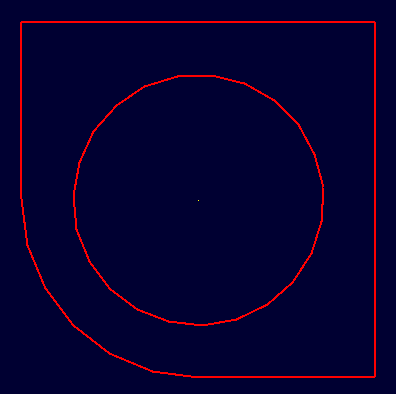

Example sketch object created with LIBGED_MAKE_SKETCH=1:

Sketches are presently usually created and edited using the graphical sketch editor interface. The sketch editor interface should display whenever a sketch is created via the Create menu or whenever an existing sketch primitive is selected for editing.
That said, it is possible using the low-level database I/O "get" and "put" commands to create and edit a sketch. Those commands are actually what the GUI-based sketch editor uses under the hood.
One of the better ways to describe the format of the sketch primitive is with an example. Here's a mildly detailed sketch that contains lots of points and several entity types. Shown in following is a case where we have a simple sketch named "mysketch". If you run the "get" command, you can see the overall structure:
mged> get mysketch
The result is:
sketch V {0 0 -4.999999999999999646464397e-40} A {1 0 0} B {0 1 0} VL { {0.59800664451827234557868 -4.674418604651163100527356} {2.501661129568105934595224 -1.833887043189368792894811} {6.259136212624585304808988 -3.109634551495016552280504} {2.581395348837209002823556 -3.209302325581395720632827} {5.830564784053156479615154 -5.571428571428572062984586} {5.521594684385382478808424 -1.764119601328903774728474} {2.531561461794019862736604 -0.9966777408637871316088308} {0.1594684385382059976787872 0.2691029900332225777148665} {-2.720930232558139483245441 -1.495016611295681085991305} {1.764119601328903774728474 -1.016611295681063120710519} {0.239202657807309121418271 -2.730897009966777755352041} {1.9634551495016612232547 -2.501661129568106378684433} {-1.265780730897009931368302 -2.611295681063122930964937} } SL { { line S 0 E 1 } { carc S 2 E 1 R -1 L 0 O 0 } { bezier D 3 P { 1 3 4 5 } } { carc S 5 E 6 R 1.644755298192071224505639 L 0 O 0 } { line S 6 E 7 } { bezier D 6 P { 7 8 9 10 11 12 0 } } }
Most of that is floating point conversion goo of course, but it boils down to what is shown in following with a V position, AxB vectors to scale/orient the sketch, a VL list of 2D vertices, and then any number of SL segment lists for lines, arcs, and bezier curves. Note that the 'sketch' prefix is not the name of the primitive but, rather, its type.
sketch
V {0 0 -4.999999999999999646464397e-40}
A {1 0 0}
B {0 1 0}
VL {
{0.59800664451827234557868 -4.674418604651163100527356}
{2.501661129568105934595224 -1.833887043189368792894811}
{6.259136212624585304808988 -3.109634551495016552280504}
{2.581395348837209002823556 -3.209302325581395720632827}
{5.830564784053156479615154 -5.571428571428572062984586}
{5.521594684385382478808424 -1.764119601328903774728474}
{2.531561461794019862736604 -0.9966777408637871316088308}
{0.1594684385382059976787872 0.2691029900332225777148665}
{-2.720930232558139483245441 -1.495016611295681085991305}
{1.764119601328903774728474 -1.016611295681063120710519}
{0.239202657807309121418271 -2.730897009966777755352041}
{1.9634551495016612232547 -2.501661129568106378684433}
{-1.265780730897009931368302 -2.611295681063122930964937}
}
SL {
{ line S 0 E 1 }
{ carc S 2 E 1 R -1 L 0 O 0 }
{ bezier D 3 P { 1 3 4 5 } }
{ carc S 5 E 6 R 1.644755298192071224505639 L 0 O 0 }
{ line S 6 E 7 }
{ bezier D 6 P { 7 8 9 10 11 12 0 } }
}
You can run the 'l' (ell not one) command on an existing sketch to get a descriptive summary. For example, S and E reference the corresponding VL vertex starting and ending point respectively.
mged> l mysketch
mysketch: 2D sketch (SKETCH)
V = (0 0 -0), A = (1 0 0), B = (0 1 0)
13 vertices
Vertices:
0-(0.598007 -4.67442) 1-(2.50166 -1.83389) 2-(6.25914 -3.10963)
3-(2.5814 -3.2093) 4-(5.83056 -5.57143) 5-(5.52159 -1.76412)
6-(2.53156 -0.996678) 7-(0.159468 0.269103) 8-(-2.72093 -1.49502)
9-(1.76412 -1.01661) 10-(0.239203 -2.7309) 11-(1.96346 -2.50166)
12-(-1.26578 -2.6113)
Curve:
Line segment (0.598007 -4.67442) <-> (2.50166 -1.83389)
Full Circle:
center: (2.50166 -1.83389)
point on circle: (6.25914 -3.10963)
Bezier segment:
degree = 3
starts at (2.50166 -1.83389)
ends at (5.52159 -1.76412)
Circular Arc:
start: (5.52159, -1.76412)
end: (2.53156, -0.996678)
radius: 1.64476
curve is counter-clock-wise
center of curvature is right of the line from start point to end point
Line segment (2.53156 -0.996678) <-> (0.159468 0.269103)
Bezier segment:
degree = 6
starts at (0.159468 0.269103)
ends at (0.598007 -4.67442)
You can create one by writing out the sketch as one long Tcl line but instead of "get", you'd use "put" to create/update a sketch. Example box:
mged> put mysketch2 sketch V {0 0 0} A {1 0 0} B {0 1 0} VL { {0 0} {1 0} {1 1} {0 1} } SL {
{line S 0 E 1} {line S 1 E 2} {line S 2 E 3} {line S 3 E 0} }
Example box with big rounded edges (barbell shape):
mged> put mysketch3 sketch V {0 0 0} A {1 0 0} B {0 1 0} VL { {0 0} {1 0} {1 1} {0 1} } SL {
{line S 0 E 1} {carc S 1 E 2 R 1 L 0 O 0} {line S 2 E 3} {carc S 3 E 0 R 1 L 0 O 0} }
Finally, as of BRL-CAD 7.22 functionality was restored for creating a default sketch (shown above) with the "make" command instead of an empty sketch ready for editing. This default shape is can be created by setting the LIBGED_MAKE_SKETCH environment variable:
mged> set env(LIBGED_MAKE_SKETCH) 1
mged> make sketch2 sketch
mged> get sketch2
sketch V {0 0 0} A {1 0 0} B {0 1 0} VL {
{500 0} {1000 0} {1000 1000} {0 1000} {0 500} {500 500} {250 250} } SL {
{ carc S 4 E 0 R 500 L 1 O 0 } { line S 0 E 1 } { line S 1 E 2 }
{ line S 2 E 3 } { line S 3 E 4 } { carc S 6 E 5 R -1 L 1 O 0 } }
mged> l sketch2
sketch2: 2D sketch (SKETCH)
V = (0 0 0), A = (1 0 0), B = (0 1 0)
7 vertices
Vertices:
0-(500 0) 1-(1000 0) 2-(1000 1000)
3-(0 1000) 4-(0 500) 5-(500 500)
6-(250 250)
Curve:
Circular Arc:
start: (0, 500)
end: (500, 0)
radius: 500
curve is counter-clock-wise
center of curvature is left of the line from start point to end point
Line segment (500 0) <-> (1000 0)
Line segment (1000 0) <-> (1000 1000)
Line segment (1000 1000) <-> (0 1000)
Line segment (0 1000) <-> (0 500)
Full Circle:
center: (500 500)
point on circle: (250 250)
There is, of course, plenty of room for improvement when it comes to creating, editing, and managing sketches and sketch data. Contributions are always welcome!